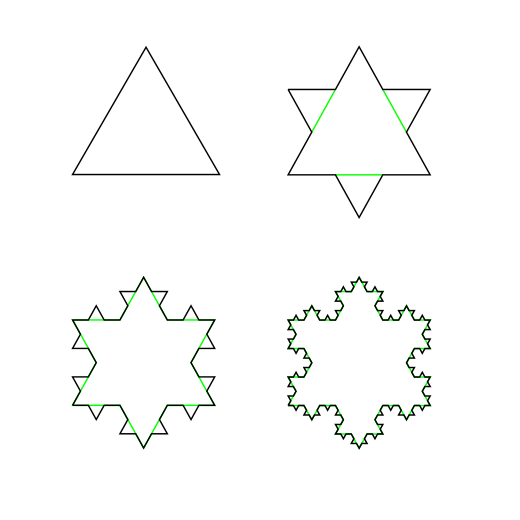
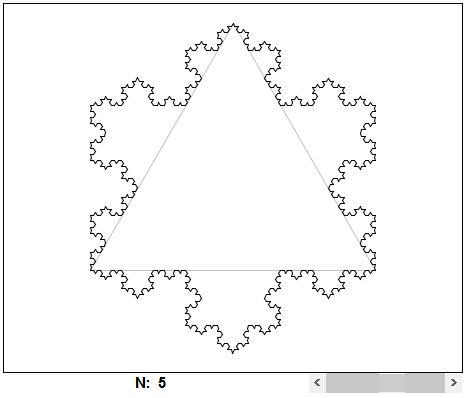

| Koch Snowflake |
| Here we start with an equilateral triangle instead of an interval and apply the same process. |
|   |
|
Suppose that the original triangle has side 1, and hence perimeter 3. Clearly, the area of the region enclosed by the curve is finite. However, the curve has infinite length. Indeed, the length of the curve at step n is 3(4/3)n, which tends to infinity. |